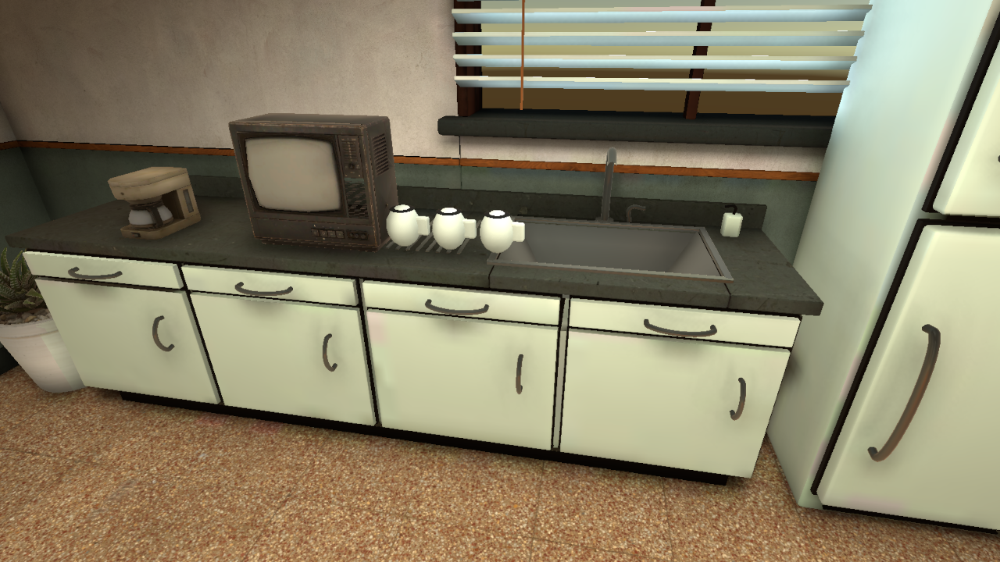

Staff room: before and after
New kitchen and refrigerator models, a readable noticeboard, painted table legs and corrected floor texture scale. Raw Unity camera captures; no image retouching.

Kitchen close-upChanges, verification and limits